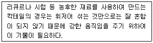
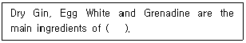
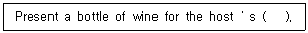
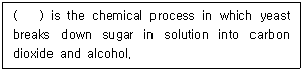
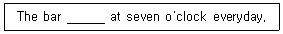
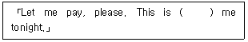
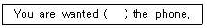
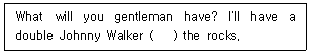

조주기능사 (2001-07-22 기출문제)
1과목: 주류학개론
1. 다음 품목 중 청량음료(Soft drink)에 속하는 것은?
- 탄산수(Sparkling Water)
- 생맥주(Draft Beer)
- 톰 칼린스(Tom Collins)
- 진 휘즈(Gin Fizz)
(정답률: 85%)

2. 발포성 와인(Sparkling Wine)과 거리가 먼 것은?
- sparkling burgundy
- cold duck
- dry sherry
- champagne
(정답률: 77%)
3. 식후주(After drink)로 적당한 것은?
- 코냑(Cognac)
- 드라이 세리(Dry Sherry)
- 드라이 진(Dry Gin)
- 벌머스(Vermouth)
(정답률: 알수없음)
4. 미국에서 발명한 갈색 청량음료로서 카페인이 커피의 두 배가 함유된 음료는?
- 사이다(Cider)
- 콜라(Cola)
- 토닉워터(Tonic water)
- 소다워터(Soda water)
(정답률: 100%)
5. 영국에서 발명한 무색투명한 음료로서 키니네가 함유된 청량음료는?
- Cider
- Cola
- Tonic water
- Soda water
(정답률: 90%)
6. 다음 중 양조주는 어떤 것인가?
- 비어
- 위스키
- 브랜디
- 리큐르
(정답률: 알수없음)
7. 브랜디드 위스키(Blended Whisky)에 대한 설명 중 틀린 것은?
- 스트레이트 위스키에 다른 위스키나 중성 곡류주정을 섞는다.
- 스트레이트 위스키에 적어도 5% 이상의 브랜디를 섞어야 한다.
- 기본인 스트레이트 위스키는 20% 이상 포함되어야 한다.
- 일반적으로 80 proof 이상으로 병에 담아 시판된다.
(정답률: 46%)
8. 다음 중 멕시코산 증류주는?
- Cognac
- Johnnie walker
- Tequila
- Cutty sark
(정답률: 100%)
9. 천연향료나 인조향료를 사용하며 그 외에 계란 노른자나 동물의 모유 등을 사용하여 만드는 혼성주 제조법은?
- Distillation Process
- Infusion Process
- Filtration Process
- Essence Process
(정답률: 알수없음)
10. 클라렛(Claret)이란 말은 다음 중 어느 것과 같은가?
- 적포도주(Red Wine)
- 백포도주(White Wine)
- 담색포도주(Rose Wine)
- 황색포도주(Yellow Wine)
(정답률: 54%)
11. 다음 중 포트와인(Port wine)을 가장 잘 설명한 사항은?
- 붉은 포도주를 총칭한다.
- 포르투갈의 도우루(Douro)지방산 포도주를 말한다.
- 항구에서 노역을 일삼는 서민들의 포도주를 일컫는 다.
- 백포도주로서 식사 전에 흔히 마신다.
(정답률: 알수없음)
12. 다음 사항 중 원료와 제법의 관계가 일치하지 못하는 것은?
- Grain - Canadian whisky
- Malt - Scotch whisky
- Corn - Canadian whisky
- Rye - Canadian whisky
(정답률: 46%)
13. 조주서비스에서 체이서(Chaser)의 의미 중 옳은 것은?
- 독한 술이나 칵테일을 내놓을 때 다른 글라스에 물을 담아 놓는 것
- 인간의 체온보다 높여 약 62℃-67℃로 해서 서빙 하는 것
- 조주하지 않고 생으로 마시는 것
- 서로 다른 두 가지 종류의 술을 소요량이 반분씩 따라 담는 것
(정답률: 70%)
14. 다음 중 데킬라 주재(Tequila base) 칵테일은?
- 마가리타
- 스카이다이빙
- 스콜피언
- 솔큐바노
(정답률: 82%)
15. 다음 중 노 믹싱(No Mixing)의 방법으로 만들어지는 칵테일은?
- High ball
- Gin Fizz
- Fizz cafe
- Flip
(정답률: 알수없음)
16. 다음 중 올리브(Olive)로 장식되는 칵테일은?
- Million Dollar
- Manhattan(standard)
- Martini
- Margarita
(정답률: 91%)
17. 다음의 재료들은 포세 카페(Pousse cafe) 칵테일에 해당된다. 최후로 따르는 재료는 어느 것인가?
- Brandy
- Creme de cacao
- Peppermint
- Violet
(정답률: 알수없음)
18. 브랜디 알렉산더(Alexander) 칵테일 조주시 필요한 재료 중 틀린 것은?
- 카카오(Cacao brown)
- 브랜디(Brandy)
- 크림(Heavy Cream)
- 비터즈(Bitters)
(정답률: 17%)
19. 다음 중 비터나 리큐르를 비터병에 넣어 정해진 양만을 비터병을 거꾸로 해서 뿌리거나 끼얹는 것은?
- Drop
- Double
- Dry
- Dash
(정답률: 73%)
20. 일반적인 라거 맥주(lager beer)의 알코올 도수로 가장 적당한 것은?
- 2도
- 4도
- 6도
- 12도
(정답률: 73%)
21. 진(Gin) 베이스로 들어가는 칵테일 중 틀린 것은?
- Gin Fizz
- Screw driver
- Dry Martini
- Gibson
(정답률: 73%)
22. 다음 칵테일 중 계란(egg)이 들어가는 칵테일은?
- Millionaire
- Black Russian
- Brandy Alexander
- Daiquiri
(정답률: 54%)
23. 바 스푼(Bar Spoon)의 용도가 틀린 것은?
- 후로팅 칵테일(Floating Cocktail)을 만들 때 사용 한다.
- 믹싱 글라스를 이용하여 칵테일을 만들 때 휘젓는용으로 사용한다.
- 칵테일을 만들 때 글라스의 내용물을 섞을 때 사용한다.
- 얼음을 잘게 부술 때 사용한다.
(정답률: 91%)
24. 정찬 식사에서 테이블 코스의 육류요리에 잘 어울리는 것은?
- White Wine
- Red Wine
- Vermouth
- Champagne
(정답률: 100%)
25. 다음 재료 중 칵테일 조주시 많이 사용하는 붉은 색의 시럽은 무엇인가?
- 메이플시럽(Maple Syrup)
- 허니(Honey)
- 플레인시럽(Plain Syrup)
- 그레나딘시럽(Grenadine Syrup)
(정답률: 82%)
26. 양조주 중 우리나라에서 제조하는 막걸리의 주재료는?
- 옥수수
- 수수
- 보리
- 쌀
(정답률: 93%)
27. 칵테일은 얼음에 잘 냉각되어 있지 않으면 안 된다. 따라서 손에서 체온이 전해지지 않도록 이용하여 제공 하는 글라스는?
- 스템드 글라스
- 하이볼 글라스
- 실린더리컬 글라스
- 믹싱 글라스
(정답률: 알수없음)
28. 마티니 칵테일을 서브할 때의 글라스(Glass)로 올바른 선택은?
- 하이볼 글라스
- 위스키샤워 글라스
- 칵테일 글라스
- 올드패션 글라스
(정답률: 알수없음)
29. 조주시 주류의 분량을 측정하기 위하여 사용되는 기물은?
- 바 스푼
- 지거
- 믹싱글라스
- 폴러
(정답률: 알수없음)
30. 다음 중 혼합하기 어려운 재료를 섞거나 프로즌 드링크를 만들 때 쓰는 기구 중 가장 적합한 것은?
- 쉐이커
- 브랜더
- 믹싱글라스
- 믹서
(정답률: 알수없음)
2과목: 주장관리개론
31. 바(Bar) 접객원의 접객방법 중 잘못 설명된 것은?
- 주문은 복창(repeat)하여 주문내용을 재확인한다.
- 세컨드 라운드(Second Round)의 주문은 고객이 요청 할 때까지 기다린다.
- 음료를 제공하기 전에 식탁위에 코스터(Coaster)를 먼저 놓는다.
- 한잔의 주문일지라도 반드시 쟁반(Tray)을 사용하여 제공한다.
(정답률: 알수없음)
32. 위생적인 주장기물 세척시간은?
- 가능한 한 사용한 후 즉시
- 영업시간 종료 후
- 기물을 전부 씻은 후
- 비교적 깨끗한 것은 재사용해도 무방
(정답률: 알수없음)
33. 글라스(Glass)의 올바른 취급방법이 아닌 것은?
- 환기가 잘 되는 장소에 보관한다.
- 평평한 표면에 타월을 깔고 보관한다.
- 글라스를 냉각(서리가 있는 것)시킬 때 냄새가 없는 냉장고를 사용한다.
- 글라스는 식료보관 냉장고에 넣어 보관한다.
(정답률: 92%)
34. 연회(Banquet)석상에서 각 고객들이 마신(소비한)만큼 계산을 별도로 하는 바(Bar)를 무엇이라고 하는가?
- Banquet Bar
- Host-Bar
- No-Host Bar
- Paid Bar
(정답률: 알수없음)
35. 차게 냉각하여 제공하는 포도주(Wine)의 적당한 서브 온도는?
- 0 - 3 ℃
- 4 - 7 ℃
- 8 - 11 ℃
- 12 - 15 ℃
(정답률: 알수없음)
36. 파티 때 디저트(Dessert) 코스로 서브하기에 부적당한 것은?
- 코인트루(Cointreau)
- 크렘 드 카카오(Creme de cacao)
- 슬로우 진(Sloe gin)
- 비어(Beer)
(정답률: 알수없음)
37. 바(Bar)의 구성 중 3가지 기능에 포함되지 않은 것은?
- 프론트 바(Front Bar)
- 사이드 바(Side Bar)
- 백 바(Back Bar)
- 언더 바(Under Bar)
(정답률: 17%)
38. 키박스(Key Box)나 바틀 멤버(Bottle Member)제도의 잘못된 설명은?
- 자기 술병을 가지고 있으므로 음료의 판매회전이 저조하다.
- 고정고객을 확보할 수 있어 고정수입이 확보된다.
- 선불이기 때문에 회수가 정확하며 자금운영이 원활 하다.
- 회원에게 특별요금으로 병채 판매하며 청량음료의 무료 서비스 혜택을 준다.
(정답률: 알수없음)
39. 영업 종료 후 인벤토리(inventory) 작업은 누가 담당 하는가?
- 칵테일 웨이트리스
- 바캐시어
- 바텐더
- 바포터
(정답률: 64%)
40. 다음 중 파 스탁(Par Stock)이란?
- 영업장 보관 재고량
- 술창고 보관 재고량
- 일일 음료 판매량
- 재고 순환율
(정답률: 알수없음)
41. 다음 Wine 저장 중 적절하지 않는 것은?
- White Wine은 냉장고에 보관하되 그 품목에 맞는 온도를 유지해 준다.
- Red Wine은 상온 Cellar에 보관하되 그 품목에 맞는 적정온도를 유지해 준다.
- Wine을 보관하면서 정기적으로 이동 보관한다.
- Wine 보관 장소는 햇볕이 잘 들지 않고 통풍이 잘 되는 곳에 보관하는 것이 좋다.
(정답률: 82%)
42. 고객에게 음료를 제공할 때 필요치 않는 비품은?
- Cocktail Napkin
- Can Opener
- Muddler
- Coaster
(정답률: 알수없음)
43. 다음 내용에 맞는 주장(Bar) 기물은?

- Bar Spoon(바 스푼)
- Cocktail Glass(칵테일 글라스)
- Cock Screw(코르크 스크루)
- Shaker(쉐이커)
(정답률: 알수없음)
44. 바(Bar) 디자인의 중요 점검사항에 포함되지 않는 것은?
- 주류가격, 병의 크기
- 시간의 영업량, 컨셉 및 분위기
- 음료종류, 주장의 형태와 크기
- 서비스 형태, 목표고객
(정답률: 알수없음)
45. 다음 중 바텐더가 지켜야 할 일이 아닌 것은?
- 표준양 목표에 의한 정량 조주를 해야 한다.
- 용모가 단정하고 예의 바른 매너를 지켜야 한다.
- 제공된 음료는 정확히 전표가 발행되어 야 한다.
- 매출관리 및 인원관리 업장에 전반적으로 책임진다.
(정답률: 85%)
46. 맥주의 저장 조건으로서 틀린 것은?
- 5~200C 에서 보관
- 통풍이 잘되고 습기가 약간 있는 장소
- 직사광선이 들어오지 않는 곳
- 온도 변화가 심하지 않은 곳
(정답률: 60%)
47. 칵테일 서비스에서 바텐더의 창의성을 가장 요하는 항목은?
- 가니쉬(장식)
- 향신료(부재료)선택
- 글라스 선택
- 기주 선택
(정답률: 69%)
48. 바텐더가 영업시작 전 준비하지 않아도 되는 업무는?
- 충분한 얼음을 준비한다.
- 글라스의 청결도를 점검한다.
- 적포도주를 냉각시켜 놓는다.
- 과일 등을 준비해 둔다.
(정답률: 91%)
49. 다음 항목 중 소모품이 아닌 것은?
- Pitcher
- Straw
- Coaster
- Cocktail Pick
(정답률: 58%)
50. 술의 손실방지 및 술을 따를 때 용이하게 하는 기구는?
- Squeezer
- Pourer
- Muddler
- Decanter
(정답률: 50%)
3과목: 고객서비스영어
51. 다음 중 뜻이 다른 문장은?
- It doesn't matter.
- It doesn't make any difference.
- It is not important.
- It is not difficult
(정답률: 알수없음)
52. 다음 괄호 안에 알맞은 것은?

- Bloody Marry
- Eggnog
- Tom and Jerry
- Pink Lady
(정답률: 70%)
53. 다음 괄호 안에 알맞은 것은?

- approve
- to approve
- approval
- see
(정답률: 알수없음)
54. Alcoholic drink distilled from rye or wheat drunk in Russia.
- Tequila
- Brandy
- Rum
- Vodka
(정답률: 70%)
55. 다음 ( ) 안에 적당한 단어는?

- Distillation
- Fermentation
- Classification
- Evaporation
(정답률: 알수없음)
56. 다음 밑줄 친 곳에 알맞은 것는?

- has open
- opened
- is opening
- opens
(정답률: 알수없음)
57. 다음 ( ) 안에 적당한 말은?

- in
- on
- after
- off
(정답률: 91%)
58. 다음 전치사 중에서 ( )에 알맞는 것은?

- in
- on
- of
- for
(정답률: 알수없음)
59. 다음 문장에서 ( )에 들어갈 단어는?

- above
- on
- over
- in
(정답률: 93%)
60. 다음 중 Ice bucket 에 해당되는 것은?
- Ice pail
- Ice tong
- Ice pick
- Ice pack
(정답률: 54%)